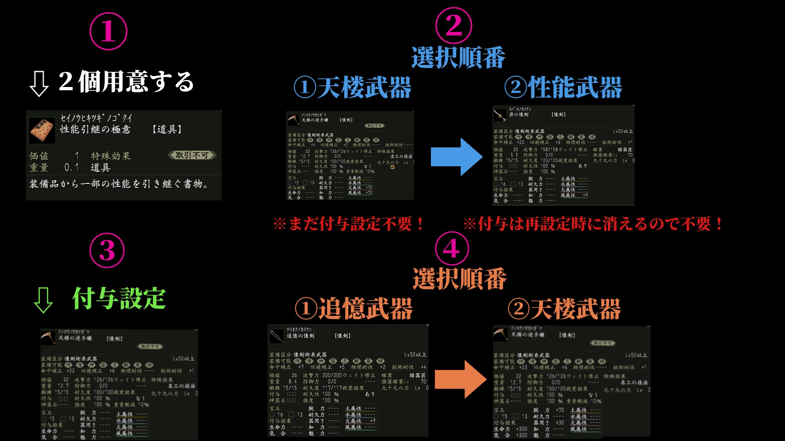

| プレイヤー | 生命 | 気合 | 腕力 | 耐久 | 器用 | 知力 | 魅力 | 土 | 水 | 火 | 風 | ※付与限界地を入力しないと赤帯補正が適応されません | ||||||||||||
| 合計能力値 | 3100 | 3100 | 350 | 350 | 350 | 350 | 350 | 350 | 350 | 350 | 350 | ←下記要素で数値は正確ではありません、目安の計算機としてご使用ください | ||||||||||||
| カンスト：残 | 96899 | 96899 | 9649 | 9649 | 9649 | 9649 | 9649 | 9649 | 9649 | 9649 | 9649 | ※一部の要素(装備,戦闘時能力上昇etc)は除外してたり正確ではない為、誤差が発生します | ||||||||||||
| 余剰値 | 0 | 0 | 0 | 0 | 0 | 0 | 0 | 0 | 0 | 0 | 0 | ※職業依存するステータス(技能実装、初期能力、潜在能力、技能覚醒)はおおよその数値です | ||||||||||||
| 余剰合計能力値 | 3100 | 3100 | 350 | 350 | 350 | 350 | 350 | 350 | 350 | 350 | 350 | |||||||||||||
| 生命 | 気合 | 腕力 | 耐久 | 器用 | 知力 | 魅力 | 土 | 水 | 火 | 風 | ||||||||||||||
| 生命 | 気合 | 腕力 | 耐久 | 器用 | 知力 | 魅力 | 土 | 水 | 火 | 風 | ||||||||||||||
| 合戦称号：差引分 | ||||||||||||||||||||||||
| 初期能力:LV85 | ||||||||||||||||||||||||
| 潜在能力 | ||||||||||||||||||||||||
| 技能覚醒:常時 | ||||||||||||||||||||||||
| 基礎能力:四聖獣 | ||||||||||||||||||||||||
| 軍神 | ||||||||||||||||||||||||
| お供絆 | ||||||||||||||||||||||||
| 称号：合計 | ||||||||||||||||||||||||
| 宝玉：合計 | ||||||||||||||||||||||||
| 英傑陣法 | ||||||||||||||||||||||||
| 英傑絆：能力 | ||||||||||||||||||||||||
| 首：付与 | 英傑絆：上昇値 | 0 | 0 | 0 | 0 | 0 | 0 | 0 | 0 | 0 | 0 | 0 | ||||||||||||
| 転生：廉貞 | ||||||||||||||||||||||||
| 腰：付与 | 英傑絆：合計上昇値 | 0 | 0 | 0 | 0 | 0 | 0 | 0 | 0 | 0 | 0 | 0 | ||||||||||||
| 腕：付与 | 家臣絆：能力 | |||||||||||||||||||||||
| 指：付与 | 家臣絆：上昇値 | 0 | 0 | 0 | 0 | 0 | 0 | 0 | 0 | 0 | 0 | 0 | ||||||||||||
| 紋：付与 | 主従の力 | 個数→ | 軍神神各 | ★4数→ | 覚醒技能実装分：生命→ | |||||||||||||||||||
| お守り:付与 | 家臣絆：合計上昇値 | 0 | 0 | 0 | 0 | 0 | 0 | 0 | 0 | 0 | 0 | 0 | ||||||||||||
| 特殊：付与 | 付与限界地 | |||||||||||||||||||||||
| 腰袋：付与 | 付与以外:上昇値 | 3100 | 3100 | 350 | 350 | 350 | 350 | 350 | 350 | 350 | 350 | 350 | ||||||||||||
| 足：付与 | 付与合計:上昇値 | 0 | 0 | 0 | 0 | 0 | 0 | 0 | 0 | 0 | 0 | 0 | ||||||||||||
| 護符：付与 | 赤帯補正後上昇値 | 0 | 0 | 0 | 0 | 0 | 0 | 0 | 0 | 0 | 0 | 0 | ||||||||||||
